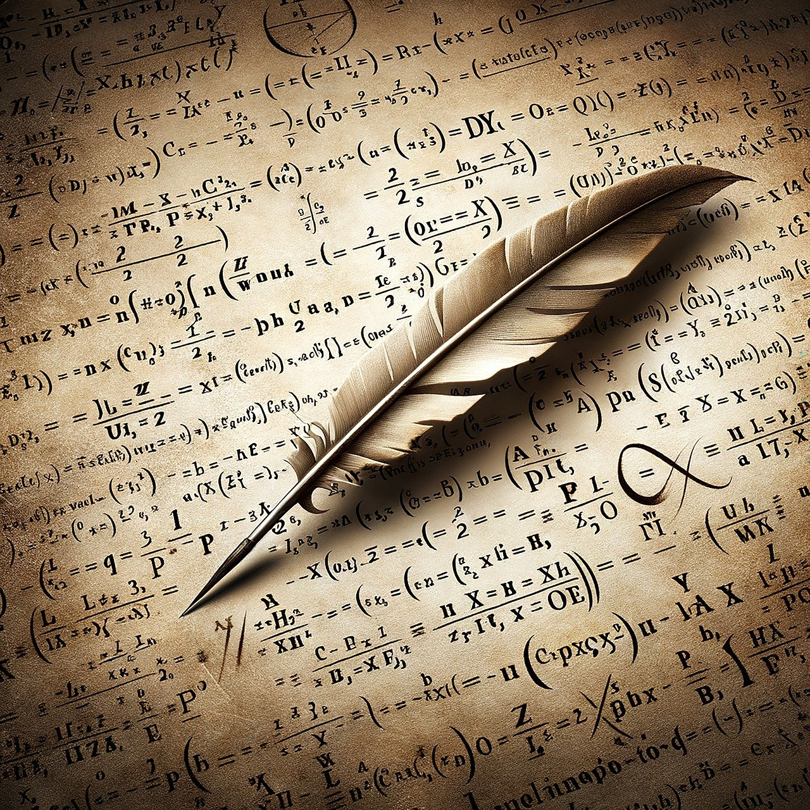
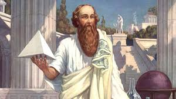
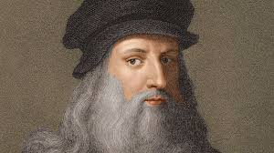
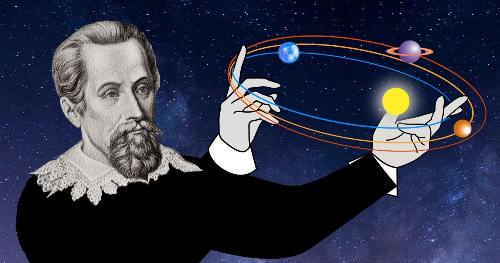
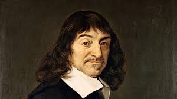
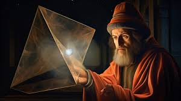
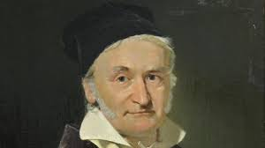

Matematica și arta sunt două domenii aparent distincte, dar au o
legătură profundă și fascinantă. De-a lungul istoriei, multe
concepte matematice au influențat și au fost folosite în creațiile
artistice, iar multe tehnici artistice sunt bazate pe principii
matematice. Iată câteva dintre modurile în care matematica și arta
se intersectează:
- Artiștii au folosit reguli matematice de simetrie și proporții pentru a crea lucrări armonioase. De exemplu, faimosul "Raport de aur" (sau secțiunea de aur) este o proporție matematică (aproximativ 1:1.618), care apare frecvent în natură și este folosită pentru a crea compoziții vizual plăcute. Această proporție a fost folosită de artiști și arhitecți celebri, cum ar fi Leonardo da Vinci sau Michelangelo.
- Geometria este un alt punct de legătură esențial între matematică și artă. Artiștii folosesc forme geometrice pentru a structura și organiza lucrările lor, iar unele stiluri artistice, cum ar fi cubismul, se bazează pe reprezentarea obiectelor prin forme geometrice simple (cubi, piramide, etc.).
- De asemenea, în arhitectură, matematică este fundamentală în proiectarea clădirilor și structurilor.
- Fractalii sunt structuri matematice care se repetă la diferite scale, iar acest concept a fost explorat artistic. Artiștii care lucrează cu fractali creează imagini ce reflectă autosimilaritatea la diferite niveluri, creând astfel desene sau imagini vizuale impresionante, care au o complexitate infinită, dar sunt generate de reguli matematice simple.
- Teoria perspectivei, care permite reprezentarea tridimensională pe o suprafață bidimensională (de exemplu, o pânză sau o foaie de hârtie), este bazată pe principii matematice. În perioada Renasterii, artiști ca Brunelleschi și Alberti au dezvoltat tehnici matematice de perspectivă, care permit redarea corectă a adâncimii și a relațiilor de dimensiune între obiecte.
- În arta digitală modernă, algoritmii matematica sunt esențiali. Artiștii utilizează programe de computer care se bazează pe matematică (de exemplu, transformări geometrice, animații generate pe baza unor funcții matematice) pentru a crea imagini și efecte vizuale unice.
- Muzica este, de asemenea, strâns legată de matematică. Ritmurile și structurile muzicale pot fi descrise prin fracții, secvențe și serii matematice. De exemplu, un ritm este adesea o unitate de timp împărțită în părți egale, iar armoniile muzicale se bazează pe relații matematice între frecvențele sunetelor.
-
1. Proporții și simetrie:
-
2. Geometrie:
-
3. Fractali:
-
4. Perspective:
-
5. Algoritmi și artă digitală:
-
6. Arta muzicală:
Ce spun matematicienii de-a lungul timpului?






Mai mulți matematicieni de-a lungul istoriei au demonstrat
legătura între matematică și artă, abordând matematica nu doar
ca pe o știință exactă, ci și ca pe o formă de exprimare creativă
și estetică. Iată câțiva dintre cei mai cunoscuți matematicieni care
au contribuit la această viziune:
- Pythagoras este celebru pentru teorema care îi poartă numele, dar și pentru filozofia sa, care a legat matematica de armonia universului. El considera că lumea este guvernată de relații matematice și că numerele sunt fundamentul realității și al frumuseții. Pythagoras și școala sa au studiat proporțiile muzicale și au văzut matematica ca pe o artă divină, în care numerele și formele geometrice sunt cheia armoniei.
- Da Vinci, deși mai cunoscut ca artist, a fost și un important matematician și inginer. El a studiat proporțiile umane și ale altor forme naturale și le-a aplicat în lucrările sale. Renumitul său desen „Vitruvian Man” este un exemplu de aplicare a principiilor matematice, precum raportul de aur, în artă. Da Vinci considera că arta și știința sunt strâns legate, iar matematica este esențială pentru înțelegerea proporțiilor și formelor în natură.
- Kepler, cunoscut pentru legile sale despre mișcarea planetelor, a fost unul dintre primii care a înțeles că matematica poate fi folosită pentru a exprima și înțelege frumusețea naturii. El a fost fascinat de armoniile numerice ale planetelor și a considerat că universul este construit pe principiul proporțiilor matematice. Kepler a fost unul dintre matematicienii care a explorat intersecția dintre știință și artă, având o viziune estetică asupra legilor naturale.
- Descartes, cunoscut pentru dezvoltarea geometriei analitice, a combinat algebra cu geometria, ceea ce a deschis drumul pentru o nouă modalitate de a înțelege și reprezenta spațiul. Conceptele sale au avut un impact semnificativ asupra modului în care artiștii și arhitecții au aplicat principiile matematice pentru a crea forme și structuri corecte din punct de vedere estetic.
- Euclid, „părintele geometriei”, a creat celebrele sale „Elemente”, un tratat care a devenit fundamentul matematicii pentru mii de ani. În acest tratat, Euclid folosește raționamente logice și demonstrații riguroase pentru a înțelege geometria, însă structura și simetria lucrării sale au fost apreciate și ca o formă de artă a raționamentului.
- Gauss este considerat unul dintre cei mai mari matematicieni din istorie. În lucrările sale, a explorat concepte precum teoria numerelor, geometria și statisticile. Gauss a avut o viziune estetică asupra matematicii și a afirmat că „matematica este regina științelor”, subliniind frumusețea și simplitatea adevărelor descoperiri matematice.
-
1. Pythagoras (c. 570 – 495 î.Hr.):
-
2. Leonardo da Vinci (1452–1519):
-
3. Johannes Kepler (1571–1630):
-
4. René Descartes (1596–1650):
-
5. Euclid (c. 300 î.Hr.):
-
6. Carl Friedrich Gauss (1777–1855):
Un iubitor al matematicii!

Dragi iubitori ai matematicii,
Matematica este limbajul universal al universului, cheia care ne ajută să înțelegem ordinea și haosul din jurul nostru. Ea nu doar că ne învață să rezolvăm ecuații, dar ne formează și gândirea, ne încurajează să gândim logic, să căutăm soluții și să vedem conexiuni acolo unde alții nu le observă.
Fiecare problemă matematică este o oportunitate de a descoperi ceva nou, iar fiecare descoperire este un pas mai aproape de a înțelege adevărurile fundamentale ale lumii în care trăim. Așa că, nu uitați: fiecare formulă, fiecare demonstrație este o mică fereastră către frumusețea infinită a matematicii!
Continuați să explorați, să învățați și să vă bucurați de această aventură fascinantă. Matematica nu este doar o știință, este o artă a raționamentului pur!
Cu respect și admirație pentru pasiunea voastră,
Un alt iubitor al matematicii.
Matematica este limbajul universal al universului, cheia care ne ajută să înțelegem ordinea și haosul din jurul nostru. Ea nu doar că ne învață să rezolvăm ecuații, dar ne formează și gândirea, ne încurajează să gândim logic, să căutăm soluții și să vedem conexiuni acolo unde alții nu le observă.
Fiecare problemă matematică este o oportunitate de a descoperi ceva nou, iar fiecare descoperire este un pas mai aproape de a înțelege adevărurile fundamentale ale lumii în care trăim. Așa că, nu uitați: fiecare formulă, fiecare demonstrație este o mică fereastră către frumusețea infinită a matematicii!
Continuați să explorați, să învățați și să vă bucurați de această aventură fascinantă. Matematica nu este doar o știință, este o artă a raționamentului pur!
Cu respect și admirație pentru pasiunea voastră,
Un alt iubitor al matematicii.